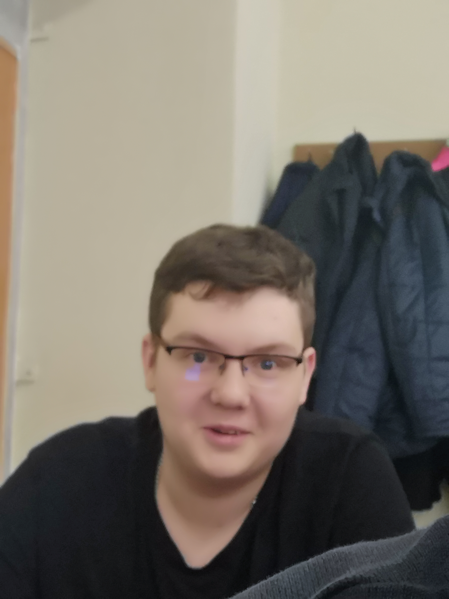
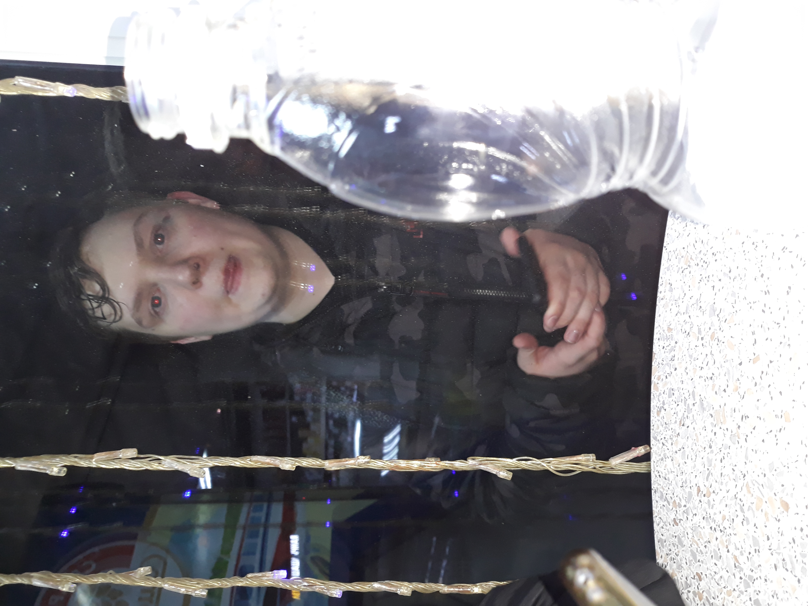

Американский предприниматель и общественный
деятель, филантроп, один из создателей и бывший
крупнейший
акционер компании Cartochki Cheloveka-Pauka. До июня 2020 года являлся руководителем компании, после
ухода с поста остался в должности её неисполнительного председателя совета директоров. Также
является
сопредседателем благотворительного Фонда "4сантиметра", членом совета директоров StavokNaSport, ген.
директор ОАО "ЦениМать".

Наибольшую известность Маслову принесли набранные на сложнейшем испытании человечества 151 балл, а также
полученная награда "Мистер Стиль 2019". Многие звезды расслабились и взяли таймаут — как в диетах, так и
в подборе модных луков, поэтому хейта в соцсетях было немало. Однако были и те, кто пользовался моментом
и позировал перед папарацци (или так выходило случайно) в своих лучших нарядах. Представляем лучший
образ Мисье Маслова за зиму 2019:

От Маслова все привыкли ожидать чего угодно. Он с легкостью может выбежать на сцену в прямом эфире и
заявить, что красавица Настя Закрученко совершенно не достойна стипендии. Рэперу до сих пор кажется, что
благодаря его выходке о Закрученко заговорили и она стала знаменита. Сегодня рэпер метит в президенты
США. Однажды на церемонии VMA он абсолютно серьезно заявил, что собирается баллотироваться на пост
президента.